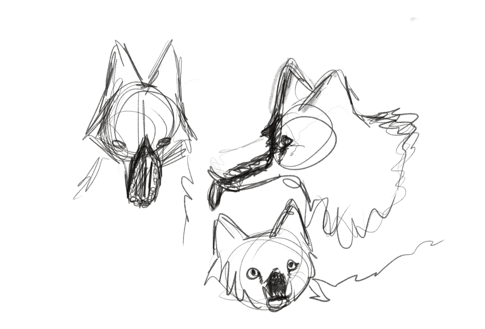
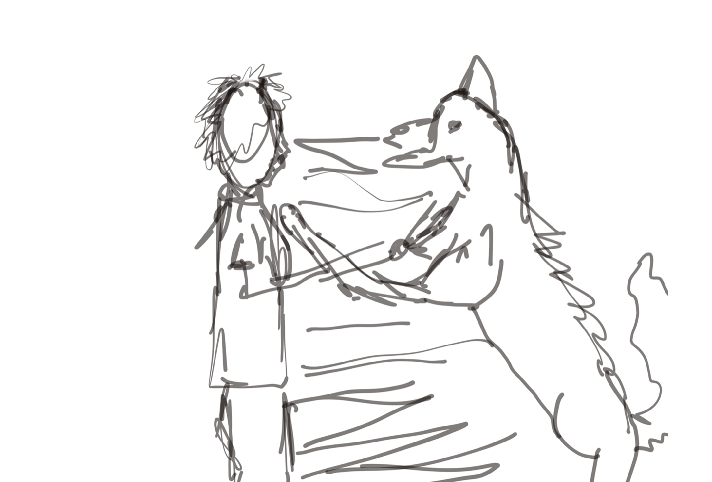
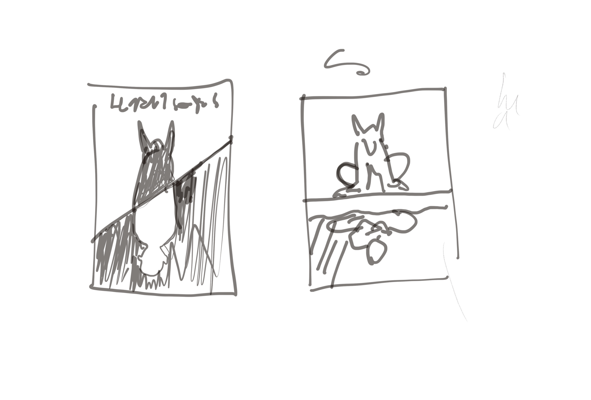
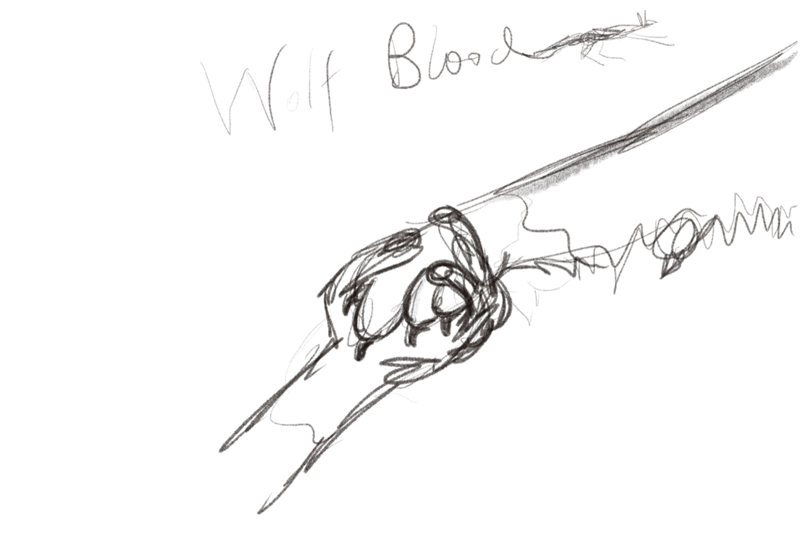
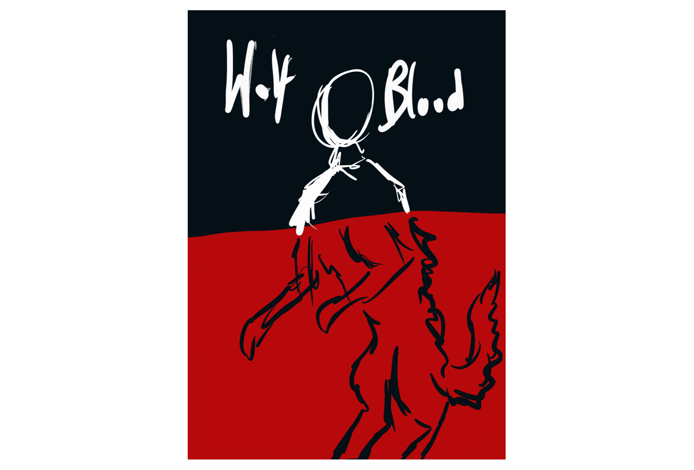
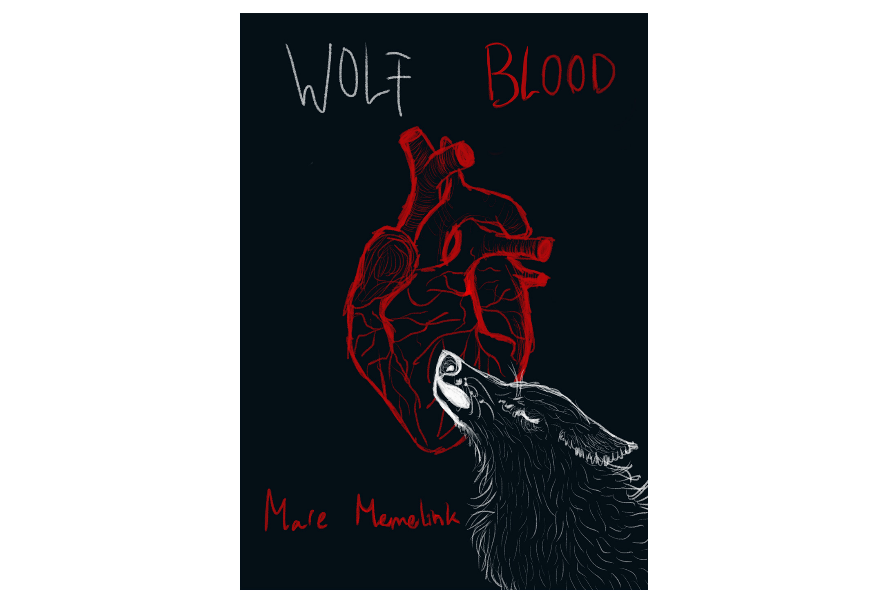
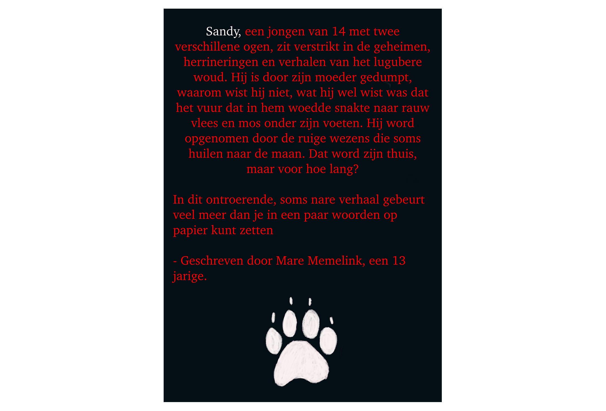

Ik ben een boek aan het schrijven. En wat hoort er bij een boek? De kaft natuurlijk! Ik ben aan de slag gegaan om de kaft voor het boek Wolf Blood te maken. Wolf Blood is het boek wat ik aan het schrijven ben, ik ben er al maanden aan bezig. Het is nu bijna af en dus besloot ik een kaft vorm te geven voor het boek. Hier zie je wat foto’s van de schetsen en uitleg erbij. Veel lees & kijk plezier! :)
Click here to talk with the artist!
Dus ik besloot andere schetsen te maken:     Met hulp van alle meesters en de juf kwam ik op steeds meer goede ideeën. Al heb ik toch een tijdje in de put gezeten, (ik wist niet meer hoe ik verder moest omdat ik alles moeilijk en lelijk vond). Maar toen kon ik uit eindelijk toch kiezen tussen twee ontwerpen waar ik toch trots op was. Ik heb gekozen voor de onderste,
die vond ik het sterkst. Uit eindelijk is dit de volledige kaft geworden:    Je kunt de achterkant lezen, dan krijg je wat meer inkijk over het boek. (Korte samenvatting: Het boek gaat over een jongen met wolven bloed die uit eindelijk moet kiezen tussen het zijn van een wolf of mens, maar dan nog wat ingewikkelder ;) Ik hoop dat jullie ervan hebben genoten!